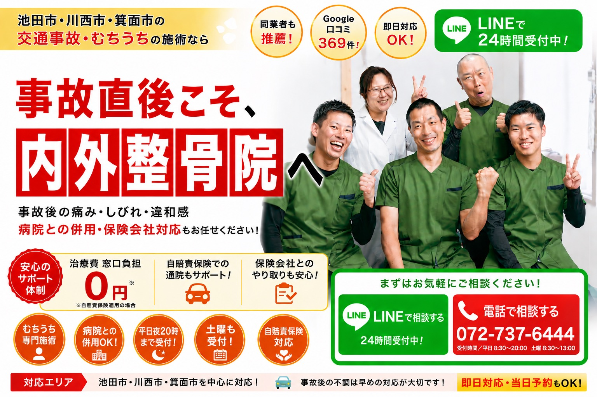
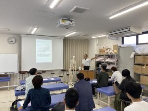
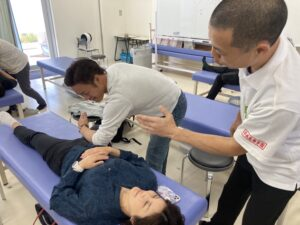
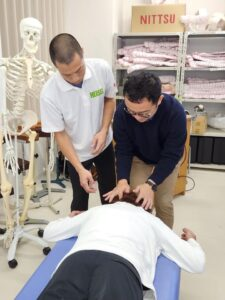
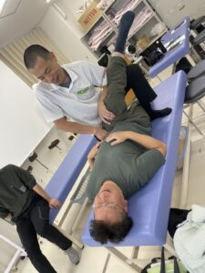
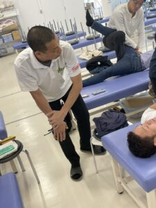
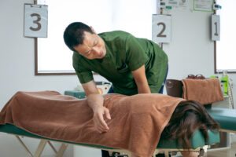

6万人以上
延べ治療実績
4.9★
Google口コミ 341件
60%以上
新規紹介率
20年以上
院長臨床歴

健康保険は使わなくてOK。手続きのご不安も、院がしっかりサポートします。
自賠責保険が適用されるため
原則あなたの負担はありません
保険会社とのやり取りも
院がサポートします
症状が出る前の早期ケアが
後遺症リスクを下げます
交通事故に遭われたら、まずご連絡ください ／ 当日予約も受付中
072-737-6444受付時間：月火木金 8:30〜11:45・14:30〜19:30 ／ 水・土 8:30〜13:00 ／ 日・祝 休診
＼ LINEで24時間 無料相談・予約する治療費・保険・通院の疑問を漫画でわかりやすく解説しています
Google口コミ 4.9★（341件）／ 実際にご来院された患者さまの声
他ではほとんどアプローチしない腸腰筋の施術をメインにされており非常に効果がありました。妻もこちらでお世話になってから随分と体調が改善されました。
1ヶ月が過ぎる頃には膝の痛みはすっかり消え、歩くときもびっこを引かなくなりました。身体はすべて繋がっているのだという観点から常に全身を診てくださります。
フラダンスのイベントまでに何とかしてほしいと藁をも掴む思いでお願いしました。イベントではほとんど違和感なく踊る事ができて、今では全く痛みや違和感もありません。
長年悩まされていた痛みが、脳脊髄液調整法と背骨の矯正を受ける事によって改善しました。もっと早く来院すれば良かったと思っています。
5ヶ月位で重症だった左足がまともに歩ける状態まで回復し、睡眠もとれるし、犬の散歩も行けるし、仕事も続けられています。
施術後はスッキリしその夜はぐっすり眠ることができます。問題のあるところと原因を的確に指摘して頂き、少しずつ症状が出る頻度が減ってきました。
20年くらい前から左足が痛だるい感じが付きまとい、国外でいろんなマッサージを受けてきたが、ここで受けて2か月くらいたったら「今までなんやったんやろう？」というくらい足が動くようになった。階段も一段飛ばしで登れるように。
整形外科で手術を勧められていましたが、こちらに通い始めてから症状がみるみる改善し、今では手術の必要がなくなりました。本当に感謝しています。
どこに行っても改善しなかった腰痛が、こちらでは3回目の施術から明らかに変化を感じました。院長先生の説明も丁寧で、原因がよく分かり安心して通えています。
※掲載のお声は個人の感想であり、効果・改善には個人差があります。
ひとつでも当てはまるなら、
それは交通事故による腸腰筋ダメージかもしれません
内外整骨院が「病院で治らなかった後遺症」を改善できる理由
衝突の衝撃で筋肉・靭帯・腸腰筋が炎症を起こしはじめます。しかし事故直後はアドレナリンの影響で症状を感じにくい状態が続くため、「大丈夫」と判断して帰宅してしまうケースが非常に多いです。
衝撃を受けた腸腰筋が防衛反応で収縮したまま固まり始めます。骨盤・背骨・内臓とつながっているため、首・肩・腰・頭部にまで連鎖的に症状が波及。病院での「安静＋湿布」では、この深部の収縮には届きません。
腸腰筋の慢性収縮が長期化すると、頭痛・めまい・不眠・手足のしびれといった神経・自律神経症状へと発展します。ここまで来ると整形外科では「異常なし」と判断されてしまうケースがほとんどです。
整形外科のレントゲン・MRIは骨・椎間板の損傷を診ます。しかし交通事故後の多くの症状は、腸腰筋・深層筋の収縮が原因であるため、画像には映りにくいとされます。「異常なし」と診断されても痛みが続く場合があるのは、そのためです。
当院は交通事故後遺症に特化した腸腰筋アプローチで、深部の収縮を直接解放します。事故による筋肉・骨格・神経への連鎖ダメージを一つの流れとして捉え、根本から改善するアプローチが、のべ6万人の治療実績を支えています。
内外整骨院 独自メソッド
痛みのある場所ではなく、交通事故の衝撃で収縮したままの腸腰筋に直接アプローチ。内側から骨盤・背骨が動ける状態をつくります。
腸腰筋の緊張に連動して負担がかかっている神経・内臓のストレスを同時に整え、身体が無意識に力を入れ続ける状態を解除します。
骨格を「押し戻す」のではなく、身体が自然に再構築される状態へ。頭痛・めまい・しびれなど後遺症症状も根本から改善していきます。
「経験したから解る！腰痛、膝痛に効く腸腰筋テクニック」


院長・清水の出身校である平成医療学園専門学校にて、当院独自の腸腰筋テクニックのセミナーを開催しました。専門学校の松本先生の頭痛を清水が改善したご縁から実現したもので、多くの先生方に技術をお伝えすることができました。



交通事故に遭われた方が、安心して治療に専念できる環境を整えています。
交通事故による治療費は、相手方の自賠責保険から賄われます。健康保険を使う必要はありません。施術代・通院交通費も対象となるため、あなたの窓口負担は原則０円です。
「今日は大丈夫だから」と放置すると、後遺症リスクが高まります。事故直後の腸腰筋への早期アプローチが、後遺症を残さないための最大の対策です。当日・翌日でも対応しています。
保険会社への診断書・通院証明書の作成はすべて院が対応します。「手続きが分からない」「保険会社との交渉が不安」という方も、ご安心ください。
整形外科への通院を続けながら、当院でも並行して治療を受けることができます。「病院では異常なし→当院で根本改善」という組み合わせが最も効果的です。
事故後も仕事を続けている方でも安心。月・火・木・金は夜19時半まで受付しています（水・土は13時まで）。土曜も診療しているため、お仕事への影響を最小限に抑えながら通院できます。
レントゲン・MRIに映らない腸腰筋・深層筋の収縮こそが、多くの後遺症の根本原因です。当院では画像には映らない筋肉・神経・骨格のダメージに直接アプローチします。
他院の先生・医師からのご紹介が絶えません。新規患者様の60%以上がご紹介経由です。同業の先生方からのご紹介を多くいただいていることが、当院の取り組みの一つの指標となっています。
厚生労働大臣認可の柔道整復師・CSFプラクティス認定治療家が、すべての施術を責任を持って担当します。交通事故治療の実績豊富な院長が直接施術にあたります。
交通事故後の初めてのご来院でも安心。丁寧にご説明しながら進めます。
まず、カルテ（問診表）に症状などの記入をお願いします。事故の状況・現在の症状・困っていること等をお書きください。その後、カウンセリングで詳しくお話を伺いますので、書ける範囲で構いません。
事故の状況や現在の症状を詳しく伺います。保険の手続き状況・他院への通院状況なども確認します。どんな些細なことでも構いませんのでお気軽にお話しください。
交通事故の衝撃がお身体にどのように影響しているか、腸腰筋を中心にわかりやすくご説明します。「なぜその症状が出ているのか」が明確になることで、改善への見通しが立ちます。
交通事故後の腸腰筋の収縮を解放し、骨盤・背骨・神経の連鎖ダメージを根本から整えていきます。強い刺激を与えず、身体が自然に回復する状態へ導きます。

施術後の変化を確認し、今後の通院計画をお伝えします。後遺症を残さないためのセルフケア方法や、保険会社への対応についても丁寧にご説明します。
交通事故の場合、治療費は相手方の自賠責保険から支払われます。窓口でのお支払いは原則０円です。保険手続きがまだの方も、スタッフが手順をご案内します。
院長である私自身が胃潰瘍になり、膝を壊して将来に不安を抱えた時期がありました。整形外科では遠回しに「諦めなさい」と伝えられ、家族の不調では途方に暮れたこともあります。
必死に改善のために動き回り、藁をも縋る思いで学び続けた結果、今では家族で過ごせる日々があります。この経験があったからこそ、「どこに行っても治らない」というお気持ちが痛いほどわかります。
交通事故後の後遺症は、お一人おひとりに合わせた施術で改善を目指します。もしわずかでもご興味を持っていただけたなら、お話だけでもしに来てください。
交通事故後の治療先として、整形外科と整骨院の違いを正直に比べてみてください。
| 整形外科 | 当院（整骨院） | |
|---|---|---|
| 待ち時間 | 患者数が多く 待ち時間が長くなりやすい |
完全予約制で待ち時間なし あなたの時間を大切にします |
| 施術の アプローチ |
機械・投薬ベースの対応 （レントゲン・湿布・電気治療） |
手技ベースの対応 身体の微細な変化を手で読み取り 腸腰筋から根本改善 |
| 患者対応 | 患者数が多く 親身な対応が難しいケースも |
交通事故患者数を絞って対応 一人ひとりに細やかなケアを 提供できる体制を維持 |
| 後遺症への 対応 |
「骨に異常なし」で 終了になりやすい |
画像に映らない症状に対応 腸腰筋の収縮という根本原因に 直接アプローチ |
| 受付時間 | 昼間のみが多く 仕事を休む必要がある |
月火木金 夜19時半まで・土曜も診療 仕事を続けながら通院できます |
交通事故による施術の場合
窓口負担 原則０円※ 交通事故の場合は自賠責保険を使用するため、健康保険との併用はできません。詳細は初診カウンセリングにてご案内します。
はい、当日・翌日からの受付が可能です。事故直後は症状が出にくい場合がありますが、腸腰筋への早期アプローチが後遺症リスクを下げます。「大丈夫かな」と思っていても、まずご相談ください。
問題ありません。保険会社への連絡方法・診断書の取得・当院への請求手続きまで、スタッフが丁寧にご案内します。保険の知識がなくてもご安心ください。
可能です。「整形外科での診断・投薬 ＋ 当院での腸腰筋アプローチ」を組み合わせることで、お一人おひとりの状態に合わせた施術ができます。ただし同一症状に対して複数の整骨院に同時通院することは保険上できません。
はい、受けられます。ただし自賠責保険の適用には事故証明・医師の診断書が必要になるため、時期によって手続きが異なります。まずはお電話またはLINEでご相談ください。
事故直後であれば週2〜3回のペースで1〜2ヶ月を目安にしています。症状が長期化している場合はそれ以上かかることもあります。初診時に改善の見通しをお伝えします。
24時間いつでも受付中
阪急「池田駅」徒歩3分 ／ 朝8時30分から受付
〒563-0055
大阪府池田市菅原町2-11
SKビル4F
阪急宝塚本線「池田駅」
から徒歩3分
治療費は自賠責保険で賄えます。窓口負担は原則０円。
後遺症を残さないために、できるだけ早いご相談をおすすめします。